Section 5: Product Samples
What our products look like, where customers use them, and example item IDs to look up in P21PLAY. Use this page with Section 4 (Products & Capabilities) and the Reference sheets.
Industrial Hose
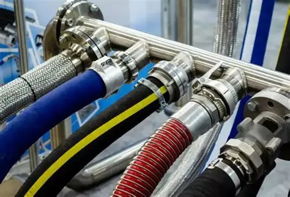
Air and water hose
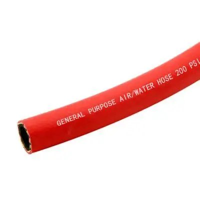
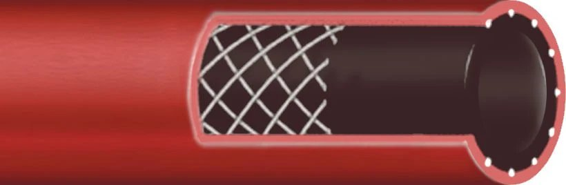
What it is: General-purpose rubber hose with a tube, a fabric reinforcement, and a cover.
Applications: Plant air, wash-down water, shop air reels, contractors.
Example items: AW-32-RD (2" red air and water), HSE GP 050 RBR RED (1/2" red general purpose)
Suction hose
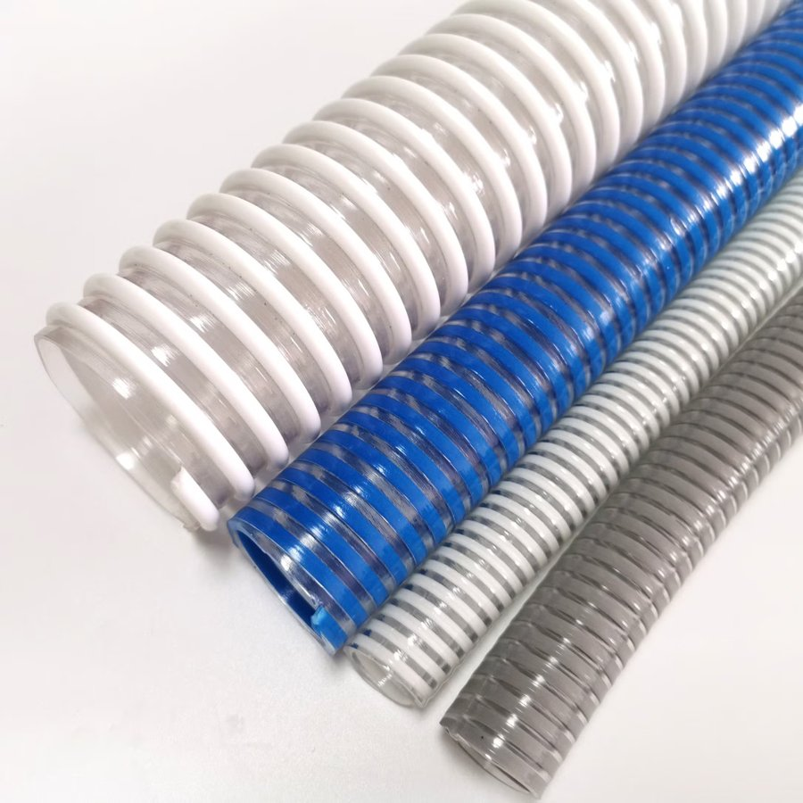
What it is: Hose with a rigid wire or plastic helix built in so it won't collapse under vacuum.
Applications: Pump suction, sumps and wet wells, dewatering, tank trucks.
Example items: HSE WTR 300 RBR SUC (3" rubber water suction)
Steam hose
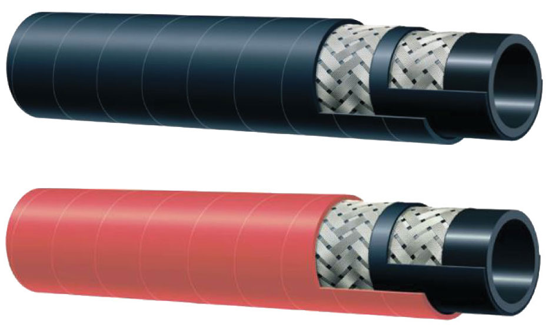
What it is: EPDM hose built for saturated steam, with a higher safety factor than water hose. Always paired with steam fittings and interlocking clamps.
Applications: Mill wash-down, cleaning stations, steam tracing and process steam.
Example items: HSE STM 075 RBR EPDM (3/4"), 150020251 (1-1/2"), HSE STM 200 RBR EPDM (2")
Chemical hose
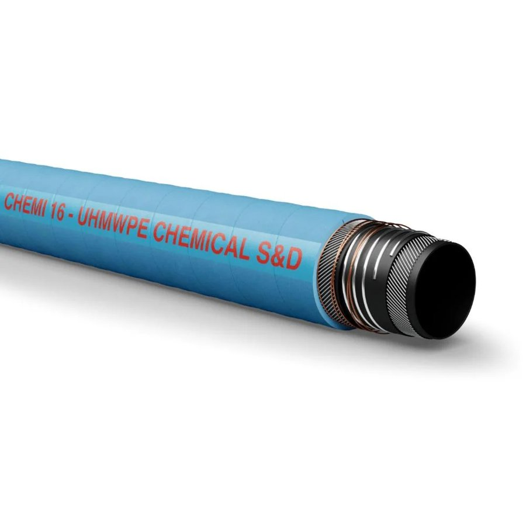
What it is: Hose with a chemical-resistant plastic tube (often UHMWPE or XLPE) for acids, caustics, and solvents.
Applications: Chemical unloading and transfer, bleach plants, water treatment chemicals.
Example items: ask your Sales Mentor; chemical hose is often special ordered for the exact media.
Layflat discharge hose
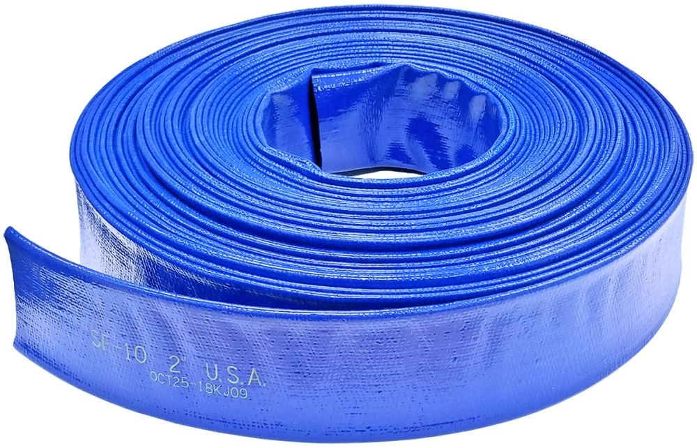
What it is: Hose that lies flat when empty and rolls up small. Discharge only; never suction.
Applications: Dewatering, pump discharge, construction, irrigation.
Example items: HSE LYFL 400 VINYL DISC BLU (4"), 150013674 (6")
Hydraulic Hose & Fittings
Two-wire braided hydraulic hose
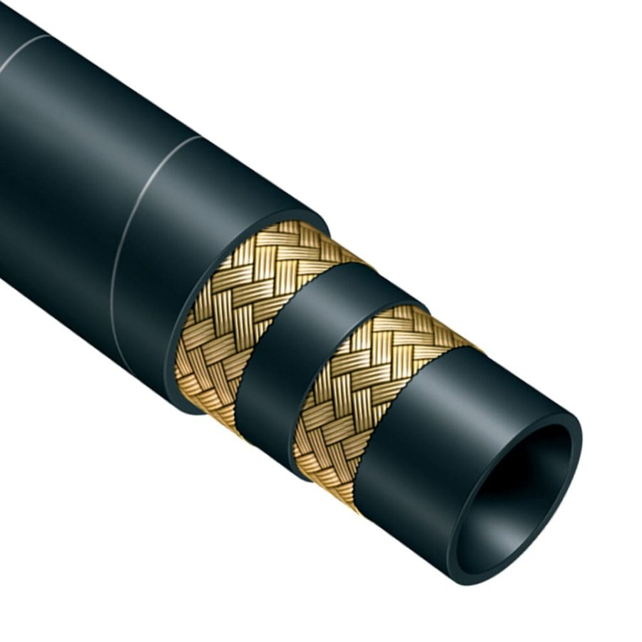
What it is: Hydraulic hose with two or more layers of braided wire. Flexible, with a tight bend radius.
Applications: Equipment repair, mobile hydraulics, presses, most counter walk-ins.
Example items: HB5K-4, HB5K-6, HB5K-8
Spiral hydraulic hose
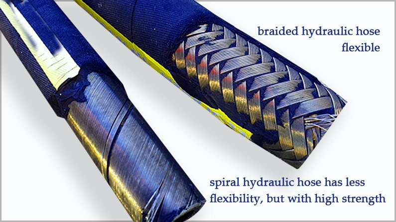
What it is: Hydraulic hose with four or six spiral-wound wire layers for high pressure and high impulse.
Applications: Heavy equipment, high-pressure mill hydraulics, large lines.
Example items: HS5K-24 (-24, 6-wire)
Crimp couplings
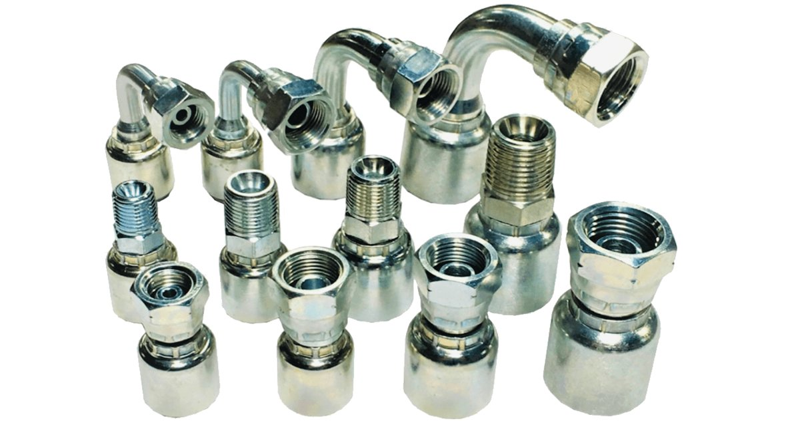
What it is: The fitting crimped onto the end of a hydraulic hose: a stem inside the hose, a ferrule outside, and a thread end (JIC, ORFS, O-ring boss, NPT, BSPP, or flange).
Applications: Every hydraulic hose assembly we build.
Example items: F2-0808-JFS, F2-0808-OBM, F2-0808-OFS, F4-2424-FL
Adapters
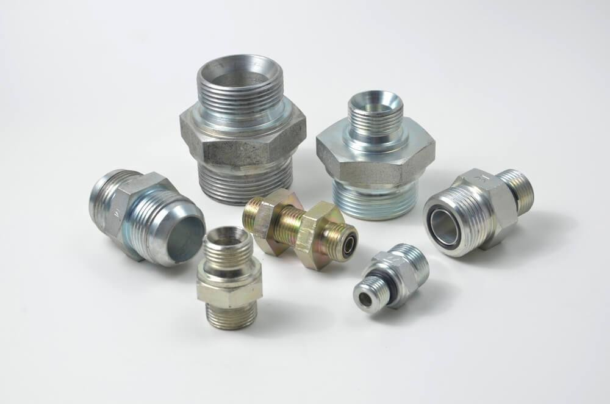
What it is: A fitting with a thread on each end that connects a hose to a port, or one thread type to another.
Applications: Pump and valve ports, changing thread types, European and Asian equipment.
Example items: FIT HYD ADPT 6401 0808 CS MORB, 7000-06-06 FG (3/8" male JIC x 3/8" male BSPT)
Hose assemblies
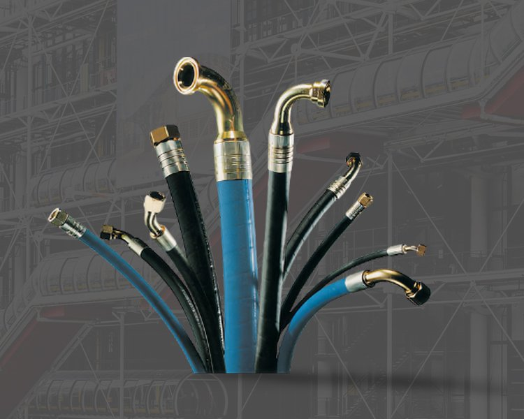
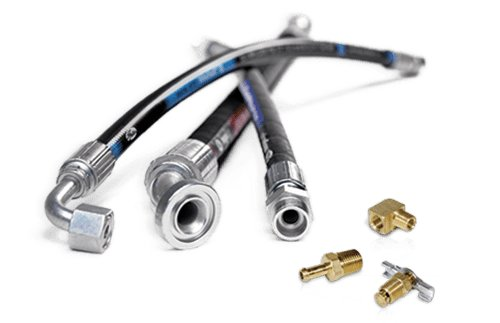
What it is: Hose with fittings crimped on both ends, cut to length, tested when required, and tagged. Built in our shop.
Applications: Replacement hoses for equipment, presses, mill hydraulics; copies of a customer's failed hose.
Example items: HB5K-8-0808JFS-0808OBM-7.04, HSE 4W 24 X 6FT 6IN W/ 2424 FL 61 E/E
Industrial Fittings & Clamps
Cam and groove couplings
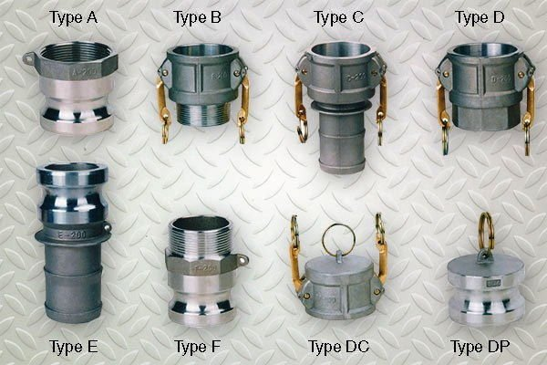
What it is: Quick-connect fittings. The coupler has cam arms; the adapter has a groove. Types A through F (Reference Sheet E).
Applications: Water, fuel, chemical, and tank truck transfer hose; pumps.
Example items: FIT CAM CPLG 300 ALM C (3" aluminum Type C), 300-E-SSCR (3" stainless Type E, crimp), GSKT CAM 300 BUNA BLACK (replacement gasket)
Ground joint steam fittings
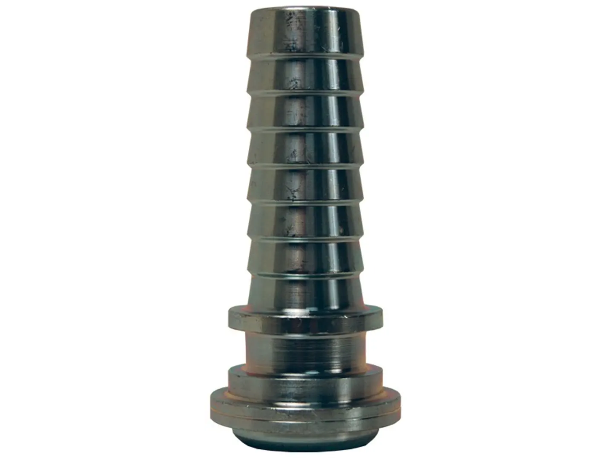
What it is: A three-piece steam fitting (stem, spud, wing nut) with a metal-to-metal seat, held on the hose with an interlocking clamp.
Applications: Every steam hose assembly.
Example items: ask your Sales Mentor for the steam fitting and clamp items we stock.
Hose clamps and bands
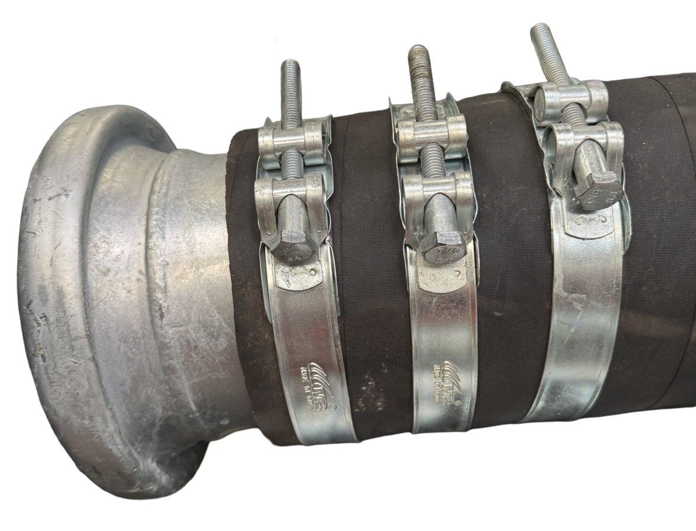
What it is: Worm gear clamps for light duty, and preformed bands for water and air assemblies.
Applications: Low-pressure water and air hose, hose barbs and menders. Never on steam.
Example items: FIT HSE MND CPLG 100 (1" hose mender), 150012469 (brass MNPT x hose barb)
Gaskets & Sheet
Ring and full-face gaskets
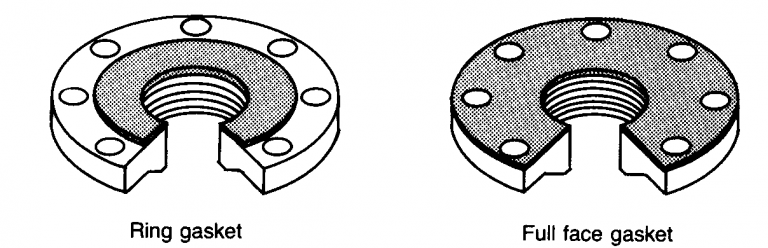
What it is: Cut gaskets for pipe flanges. Ring gaskets fit inside the bolts on raised-face flanges; full-face gaskets cover the whole flange and have bolt holes.
Applications: Pumps, valves, piping, tanks. Every mill and plant.
Example items: GSKT RING 10.625 X 17 X .125 EPDM, GSKT FF 4 150# X .125 9000
Gasket sheet
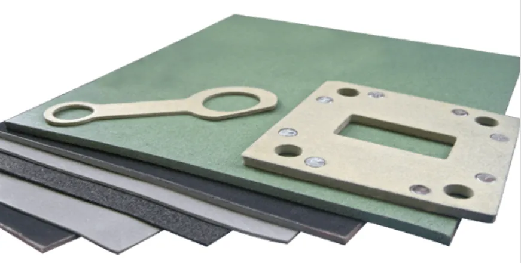
What it is: Sheet material we cut gaskets from on the waterjet, or sell by the square inch.
Applications: Cut gaskets, custom shapes, customers who cut their own.
Example items: GSKT SHT DURLO PTFE (Durlon 9000), SHT INERTECH 60X60 PTFE (ePTFE), 150016595 (green, 1/16"), SHT PAK 48X0125 NEO (neoprene)
O-rings and cord stock
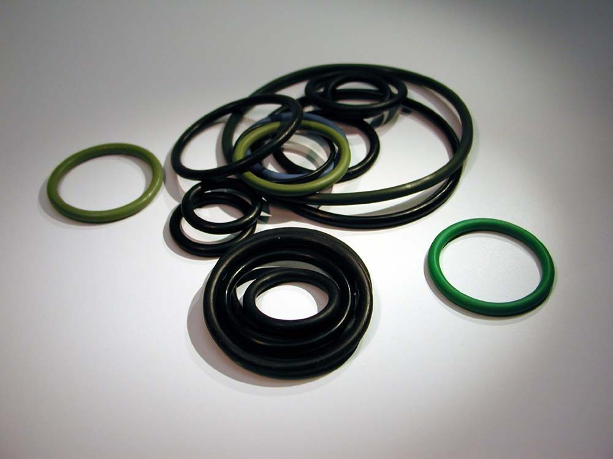
What it is: Standard O-rings by AS568 size, and cord stock cut and spliced for large or odd sizes (Reference Sheet N).
Applications: Pumps, valves, hydraulic fittings, equipment seals.
Example items: N70.750X 18.75 (nitrile cord, 70 durometer)
Compression packing
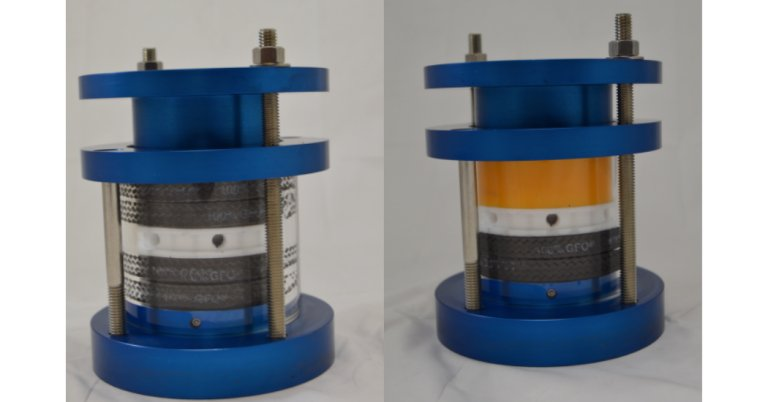
What it is: Braided packing cut into rings to seal pump shafts and valve stems.
Applications: Mill pumps and valves.
Example items: UNIVERSAL LANTERN RING LR3/4X1 (lantern ring used with packing)
Piping Products
Expansion joints and bellows
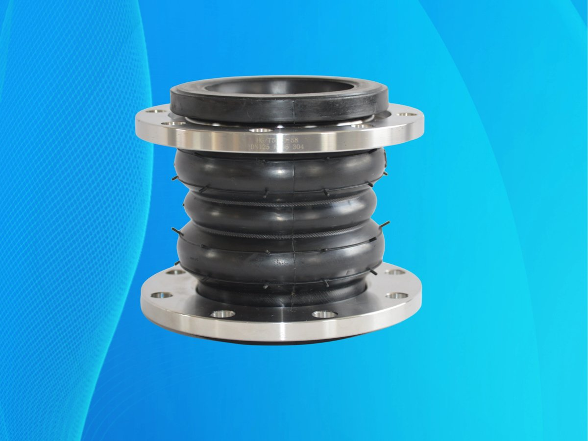
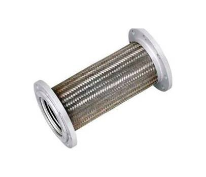
What it is: Flexible joints, stainless or rubber, that absorb movement, vibration, and heat growth in piping.
Applications: Mill piping, pump connections, steam and process lines.
Example items: EXP BELLOW 12X20 FX X FL, SS BELLOW 12 X 11 F X FL
Stainless braided metal hose
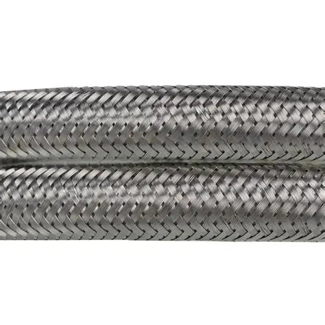
What it is: Corrugated stainless hose with a stainless braid, built with flanges or threaded ends.
Applications: High temperature lines, steam, vibration isolation, chemical transfer.
Example items: 150019658 (3" x 8' with 150# flanges)
Other Products & Services
Belting
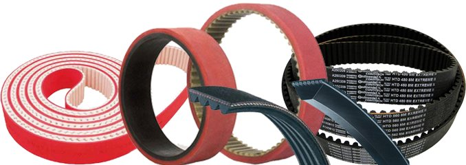
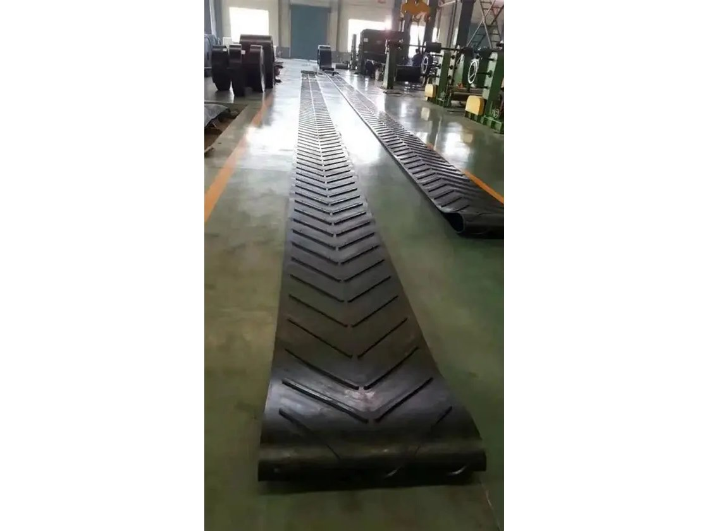
What it is: Conveyor and transmission belting, sold by the foot or made endless.
Applications: Conveyors and drives in mills and plants.
Example items: ask your Sales Mentor.
Waterjet cutting
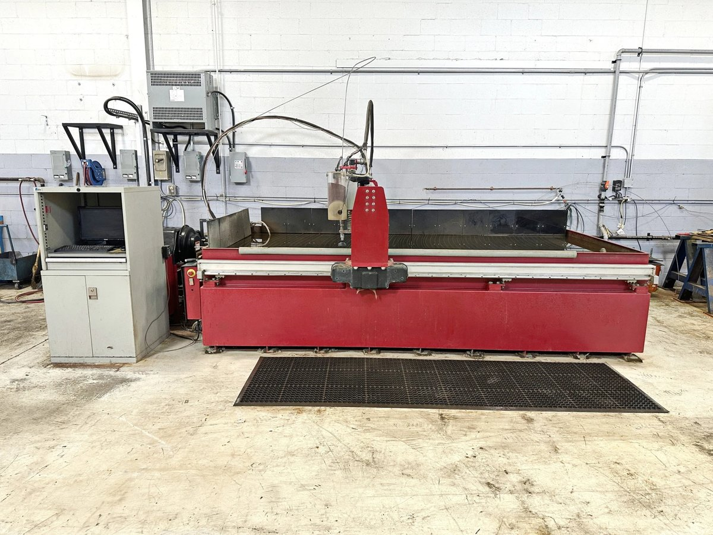
What it is: Our waterjet cuts gaskets and custom parts from rubber, plastic, insulation, and metal.
Applications: Cut gaskets, paddle blinds, plates, OEM parts to drawing.
Example items: OCI WATER JET LABOR (cutting time), MTL SHT 316SS 0125 11GA (stainless sheet), 150015559 (10" 150# stainless paddle blind)
Adding Photos of Our Own Samples
To swap a picture for a photo of our own sample:
- Take the photo on a plain background, landscape, about 1200 pixels wide.
- Give it the same file name as the picture it replaces (for example
suction-hose.jpg). - On github.com, open the
img/samplesfolder, choose Add file, then Upload files, and upload it. It replaces the old picture. - Commit. The page rebuilds in a minute or two.